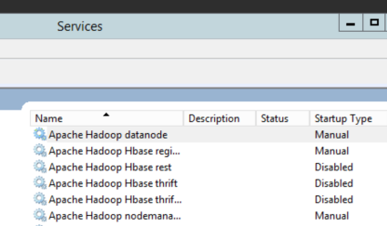

Hadoop is a horizontally scalable data platform. You add storage and processing capacity to the system by adding more nodes to the cluster. This guide will outline how to add one node to an existing cluster.
This guide was developed for HDP 2.0 for Windows. The commands and steps were carried out on a Windows Server 2012 R2 set of machines.
For this guide, I've started with a single node HDP 2.0 for Windows cluster. It has every HDP service component installed, all on the single node's host name. It is using Derby for the metastore database.
The cluster properties used for this single node cluster:
#Log directory
HDP_LOG_DIR=c:\hadoop\logs
#Data directory
HDP_DATA_DIR=c:\hdpdata
#hosts
NAMENODE_HOST=WIN-NJT8GP7961S
SECONDARY_NAMENODE_HOST=WIN-NJT8GP7961S
RESOURCEMANAGER_HOST=WIN-NJT8GP7961S
HIVE_SERVER_HOST=WIN-NJT8GP7961S
OOZIE_SERVER_HOST=WIN-NJT8GP7961S
WEBHCAT_HOST=WIN-NJT8GP7961S
SLAVE_HOSTS=WIN-NJT8GP7961S
CLIENT_HOSTS=WIN-NJT8GP7961S
HBASE_MASTER=WIN-NJT8GP7961S
HBASE_REGIONSERVERS=WIN-NJT8GP7961S
ZOOKEEPER_HOSTS=WIN-NJT8GP7961S
FLUME_HOSTS=WIN-NJT8GP7961S
#Database host
DB_FLAVOR=DERBY
DB_HOSTNAME=WIN-NJT8GP7961S
DB_PORT=1527
#Hive properties
HIVE_DB_NAME=hive
HIVE_DB_USERNAME=hive
HIVE_DB_PASSWORD=hive
#Oozie properties
OOZIE_DB_NAME=oozie
OOZIE_DB_USERNAME=oozie
OOZIE_DB_PASSWORD=oozie
A slave node is characterized as a node in the HDP cluster that only runs slave HDP components. In this cluster, that would entail a DataNode, a NodeManager, and an HBase RegionServer.
We want to add one slave node to this existing cluster. The slave node will point to all the master services that are running on the single node cluster.
We take the cluster properties file from host 1, and copy it over to the node that will be added. Then modify the cluster properties file by adding the second node's host name to the slave host lines.
My second node's hostname is 'WIN-NODE2':
> hostname
WIN-NODE2
In the cluster properties file, I add to the following lines:
# Add to HDFS/YARN slaves
SLAVE_HOSTS=WIN-NJT8GP7961S,WIN-NODE2
# Add to HBase region servers
HBASE_REGIONSERVERS=WIN-NJT8GP7961S,WIN-NODE2
With these two additions, the cluster properties file on WIN-NODE2 now looks like this:
#Log directory
HDP_LOG_DIR=c:\hadoop\logs
#Data directory
HDP_DATA_DIR=c:\hdpdata
#hosts
NAMENODE_HOST=WIN-NJT8GP7961S
SECONDARY_NAMENODE_HOST=WIN-NJT8GP7961S
RESOURCEMANAGER_HOST=WIN-NJT8GP7961S
HIVE_SERVER_HOST=WIN-NJT8GP7961S
OOZIE_SERVER_HOST=WIN-NJT8GP7961S
WEBHCAT_HOST=WIN-NJT8GP7961S
SLAVE_HOSTS=WIN-NJT8GP7961S,WIN-NODE2
CLIENT_HOSTS=WIN-NJT8GP7961S
HBASE_MASTER=WIN-NJT8GP7961S
HBASE_REGIONSERVERS=WIN-NJT8GP7961S,WIN-NODE2
ZOOKEEPER_HOSTS=WIN-NJT8GP7961S
FLUME_HOSTS=WIN-NJT8GP7961S
#Database host
DB_FLAVOR=DERBY
DB_HOSTNAME=WIN-NJT8GP7961S
DB_PORT=1527
#Hive properties
HIVE_DB_NAME=hive
HIVE_DB_USERNAME=hive
HIVE_DB_PASSWORD=hive
#Oozie properties
OOZIE_DB_NAME=oozie
OOZIE_DB_USERNAME=oozie
OOZIE_DB_PASSWORD=oozie
Using this cluster properties file, we install HDP for Windows on the second node:
msiexec /qn /i "hdp-2.0.6.0.winpkg.msi" /lv "hdp.log" HDP_LAYOUT="C:\install\clusterproperties.txt" HDP_DIR="C:\hdp\hadoop" HDP_USER_PASSWORD="hadoop_user_pass" DESTROY_DATA="YES"
Upon successful completion of the installer, you will have a two node HDP Windows cluster - one with all the master services and slave services, and another with just the slave services.
Only slave services are installed:

Start these services:
C:\hdp> start_local_hdp_services.cmd
The DataNode, NodeManager and RegionServer should start. <!-- You can verify by going to the NameNode UI and looking at the DataNodes:
 -->
-->